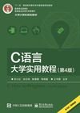
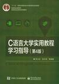

C语言大学实用教程（第4版）
编 著：
苏小红
，
孙志岗
等
出 版 社：
电子工业出版社
出版日期：
2017年1月
零 售 价：
45元
ISBN号码：
978-7-121-30005-9

C语言大学实用教程学习指导（第3版）
编 著：
苏小红
，
孙志岗
等
主 审：
王宇颖，李东
出 版 社：
电子工业出版社
出版日期：
2017年3月
零 售 价：
45.00元
ISBN号码：
978-7-121-30923-6
简介
教材简介（ppt格式）
※本简介在未征得同意的情况下引用了一些读者对本书的评论，如果您认为引用您的话有所不妥，那么请联系我们※
勘误表
《教程 第4版》第1次印刷勘误表
（更新时间：2015-05-16）
《教程 第3版》第6次印刷勘误表
（更新时间：2015-05-16）
《教程 第3版》第3次印刷勘误表
（更新时间：2015-04-09）
《教程 第3版》第1次印刷勘误表
（更新时间：2013-4-3）
《学习指导 第3版》第1次印刷勘误表
（更新时间：2014-2-24）
《教程 第二版》第8-10次印刷勘误表
（更新时间：2010-08-19）
《学习指导 第二版》第1次印刷勘误表
（更新时间：2010-01-18）
《教程 第二版》第2-7次印刷勘误表
（更新时间：2009-07-03）
《教程 第二版》第1次印刷勘误表
（更新时间：2007-05-26）
《学习指导》第2-6次印刷勘误表
（更新时间：2009-07-06）
《学习指导》第1次印刷勘误表
（更新时间：2007-05-26）
《教程》第5、6次印刷勘误表
（更新时间：2006-10-31 12:00）
《习题与实验指导》第4、5次印刷勘误表
（更新时间：2006-10-31 12:03）
《教程》第1次印刷勘误表
（更新时间：2005-04-22 23:29）
《教程》第2、3次印刷勘误表
（更新时间：2005-06-03 13:58）
《习题与实验指导》勘误表
（更新时间：2005-06-03 13:58）
下载
《C语言大学实用教程》教学课件
（ppt格式）
例题源代码（第1版）
例题源代码（第3版）
例题源代码（第4版）
习题源代码（第1版）
习题源代码（第2版）
习题源代码（第3版）
习题源代码（第4版）
实验题源代码（第1版）
实验题源代码（第2版）
实验题源代码（第3版）
实验题源代码（第4版）
错误案例
趣味经典实例
综合实例（学习指导书）
游戏程序（学习指导书）
推荐开发环境：
Code::Blocks
C语言编程题考试自动评分系统软件使用协议V1.2版
购书
全国各大书店有售
购书网址
各方评论
读者评论
（
欢迎留下宝贵意见
）
媒体评论
相关链接
国家级精品课程
2007年黑龙江省精品课程
2006年黑龙江省精品课程
2005年黑龙江省精品课程
乐学网
本教材先后被下列院校采用（不完全统计截止到2017-09-25）
哈尔滨工业大学
哈尔滨商业大学
厦门大学
宁波大学
武汉理工大学
武汉大学医学院
南京邮电大学
华中农业大学
云南大学
青岛大学
成都大学
北京理工大学珠海学院
武汉江汉大学
长春理工大学
鞍山科技大学
齐齐哈尔大学
成都西南民族大学
西安石油大学
内蒙古农业大学
新疆石河子大学
华北电力大学（北京）
北京石油化工学院
重庆邮电学院
太原理工大学
桂林电子工业学院
长春税务学院
重庆警官职业学院
温州师范学院
鄂东职业技术学院
绵阳师范学院
河北管理干部学院
山东轻工学院
安徽亳州职业技术学院
山东省滨州学院
大连理工大学
山东科技大学
西南科技大学
辽宁大学
浙江理工大学
温州大学
黑龙江大学
西北大学现代学院
苏州大学
佳木斯大学
牡丹江大学
聊城大学汽车与交通工程学院
南京师范大学中北学院
郑州航院
江西师范大学计算机信息工程学院
中国石油大学（华东）信息与控制工程学院
山西省长治学院
江苏科技大学
华北水利水电学院
中南财经政法大学
山东建筑大学
北京工业大学软件学院
北京联合大学平谷学院
牡丹江医学院卫生经济管理学院
徐州师范大学
天津民航学院
北京物资学院
江苏技术师范学院
琼州学院
成都电子科技大学
东莞理工学院
广东金融学院
深圳大学
中国传媒大学
安徽工业大学
贵州大学
广西工学院
合肥学院
山东政法学院
曲阜师范大学
江南大学
内蒙古财经学院
北京师范大学珠海分校
常州大学
西南财经大学
中山大学
宜春学院
绵阳师范学院商学院
山东滨州学院
沈阳师范大学
浙江台州职业技术学院
绥化学院
湖南文理学院
湖北经济学院
厦门理工学院
内蒙古科技大学工程训练中心
厦门城市职业学院
浙江科技学院
湖北交通职业技术学院
哈尔滨华德学院
广西科技大学
湘潭大学
大连大学
江西财经大学统计学院
广西民族大学
兰州财经大学计算机系
石家庄邮电职业技术学院
山西水利职业技术学院
齐鲁工业大学
东北电力大学电气工程学院
山东科技大学
武汉科技大学管理学院信管系
山西水利职业技术学院机电工程系
天津职业技术师范大学自动化学院测控技术系
浙江农林大学暨阳学院
{kind=link}
{kind=link}